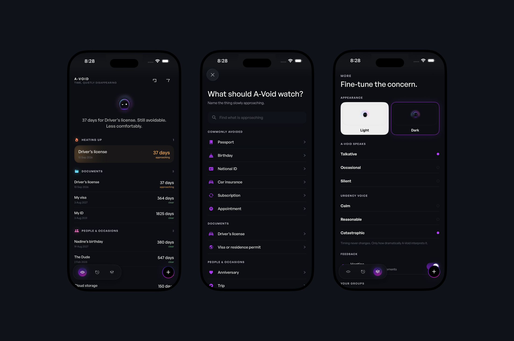

Brand Identity
Digging through the narrative until I find what actually carries the brand.
Open to Relocation
Recent Works(〜1y)
Digging through the narrative until I find what actually carries the brand.
Turning everything you're building into one system.
Making the image itself — retouching, manipulation, craft — not just assembling the system.
Designing around how a product gets used, not a fictional bio for it.
Treating AI like a studio — direction, generation, post-production.
Building the deck that makes your case.
Vibe coding sites and apps — no dev background, just crafty enough to ship the real thing.
Real conversations, years of leading teams — not generic frameworks.
Not my primary focus, but also naming, packaging, shoot briefs, video editing, and teaching.
I work best with people and teams who need design solved, not managed. Not one of ten people on a system — one person who says "okay, let's build this": logo, type, color, a brand identity that holds up, a website, an app if that's what's needed, AI production where it helps, photo retouching, and enough design education along the way that you understand why it works. Full ownership, one point of contact, no handoffs.
Open to Relocation
Based in the EUCurrently a digital nomad in Đà Nẵng — Việt Nam

What satisfies me isn't another logo on my résumé, a new design approach, or clicking buttons in Figma — and I don't do any of this out of passion either. My process is a fight, with the brief, with the obvious, with anything that comes too easy. That restlessness is where everything starts: design, leadership, coaching, all of it.
It's showing up for individuals and teams who need support, finding that rare fit where something real clicks between us. Underneath the polish, there's usually something worth digging for — and when those layers break, the real and beautiful comes alive.
20+ Years of XP
Either directly as a designer, or as Design Team Lead overseeing the work — stepping in to support individual designers when needed — I've been involved with well-known brands as well as smaller startups, NGOs, and other projects I found worth supporting.
Microsoft, McDonald's, LEGO, Tinder, T-Mobile, Vodafone, Epic Games, Autodesk, Barnes & Noble, AC Sparta Prague, Czech President's Office, CEZ, Barry's, Czech Technical University, KB, NN Group, Czech Railways, CSOB, The Athletic, OneLogin, Otter.ai, The Pump by Arnold Schwarzenegger, Boosted
Freelance
Design & Mindset Coaching
ICF (ACSTH) & EMCC-accredited coach
STRV
Chief Design & Engineering Officer
Prev. Design Team Lead, Product Designer
SYMBIO
Graphic Designer
FG
Graphic Designer

An iOS app for keeping track of the things that quietly become problems when you forget them. Passports, renewals, appointments, birthdays and anything else with a future attached. Instead of treating every date with equal urgency, A-Void understands when something actually starts to matter, gradually shifting its interface, color and personality as pressure builds. At the center is A-Void itself — a reactive character that turns reminders, system feedback and the passage of time into a more expressive, spatial experience.